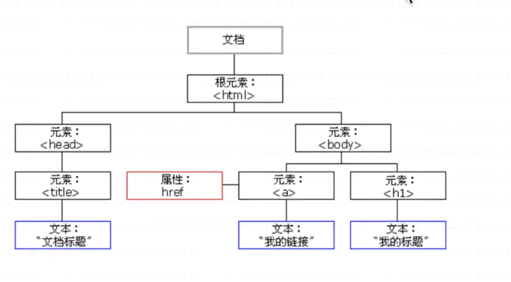

什么是DOM
文档对象模型（DOM）是HTML和XML文档的编程借口。
在HTML里我们可以看到很多可折叠的标签。Js可以选择这些页面上对应的文档元素然后进行操作它，这些文档是对象，有相应的属性和方法。
所以称为文档对象模型。相当于把文档对象化，之后可以用Js进行对象的操作。
要改变页面的某个东西，Js就需要获得对HTML文档中所有元素进行访问的入口。
这个入口连同对HTML元素进行添加，移动，改变或移除的方法和属性，都是通过DOM来获得的。

DOM获取元素的方式
- document 对象
每个载入浏览器的HTML文档都会成为document对象。
document对象包含了文档的基本信息，我们可以通过JavaScript对HTML页面中的所有元素进行访问、修改。
- Element
除了document对象，在DOM中最常用的就是Element对象了，Element对象表示HTML元素。
Element 对象可以拥有类型为元素节点、文本节点、注释节点的子节点，DOM提供了一系列的方法可以进行元素的增、删、改、查操作
DOM元素选取常用API
- getElementById()
- getElementsByClassName()
- getElementsByTagName()
- getElementsByName()
- querySelector()
querySelector方法返回匹配指定的CSS选择器的元素节点。如果有多个节点满足匹配条件，则返回第一个匹配的节点。如果没有发现匹配的节点，则返回null。
可以完成getElementById和getElementsByTagName的工作
- querySelectorAll()
querySelectorAll方法返回匹配指定的CSS选择器的所有节点，返回的是NodeList类型的对象。NodeList对象不是动态集合，所以元素节点的变化无法实时反映在返回结果中。
str = document.querySelectorAll(selectors);
querySelectorAll方法的参数，可以是逗号分隔的多个CSS选择器，返回所有匹配其中一个选择器的元素。
创建和添加DOM元素
创建元素:
用createElement()来创建元素节点，如1
var div = document.createElement("div")
用creatTextNode()来创建文本节点，如1
var text = document.createTextNode("hello")
用createDocumentFragment()生成一个Dom片段，不属在文档流中,如1
var docFragment = document.createDocumentFragment();
添加元素：
用appendChild()，在元素末尾添加子元素，如：1
2
3var div = document.createElement("div")
var text = document.createTextNode("hello")
div.appendChild(text)
如需向 HTML DOM 添加新元素，必须首先创建该元素（元素节点），然后向一个已存在的元素追加该元素。1
2
3
4
5
6
7
8
9
10
11
12
13
14
15
16
17
18
19
20
21<div id="div1">
<p id="p1">这是一个段落</p>
<p id="p2">这是另一个段落</p>
</div>
<script>
// 这段代码创建新的 <p> 元素：
var para=document.createElement("p");
// 如需向 <p> 元素添加文本，您必须首先创建文本节点。这段代码创建了一个文本节点：
var node=document.createTextNode("这是新段落。");
// 然后向 <p> 元素追加这个文本节点：
para.appendChild(node);
// 最后您必须向一个已有的元素追加这个新元素。这段代码找到一个已有的元素：
var element=document.getElementById("div1");
// 这段代码向这个已有的元素追加新元素：
element.appendChild(para);
</script>